Thermomètre
De Bain
Conception et vérification d'une carte électronique de mesure de température pour bébé — IUT GEII Bordeaux
Le projet
Présentation
Dans le cadre de la SAÉ de première année de BUT GEII, j'ai conçu et vérifié une carte électronique de thermomètre de bain pour bébé, commandée par le client fictif Baby Corporation. L'objectif était de réaliser un dispositif capable de mesurer la température de l'eau d'un bain et de la signaler visuellement à l'aide de trois LED colorées : bleue (< 36 °C), verte (36–39 °C) et rouge (> 39 °C).
La carte intègre un capteur analogique LM35DZ (10 mV/°C, plage 0–500 mV), un pont diviseur de tension à trois résistances générant les seuils à 360 mV et 390 mV, un AOP double MCP6002 utilisé en mode comparateur, une porte NOR 74HC02 pour la logique d'allumage, et une alimentation régulée à 5 V par un LM78L05 depuis une batterie LiPo 2S 7,4 V / 350 mAh. Le coût total des composants s'élève à 6,71 € TTC, pour un boîtier de 100 × 60 mm.
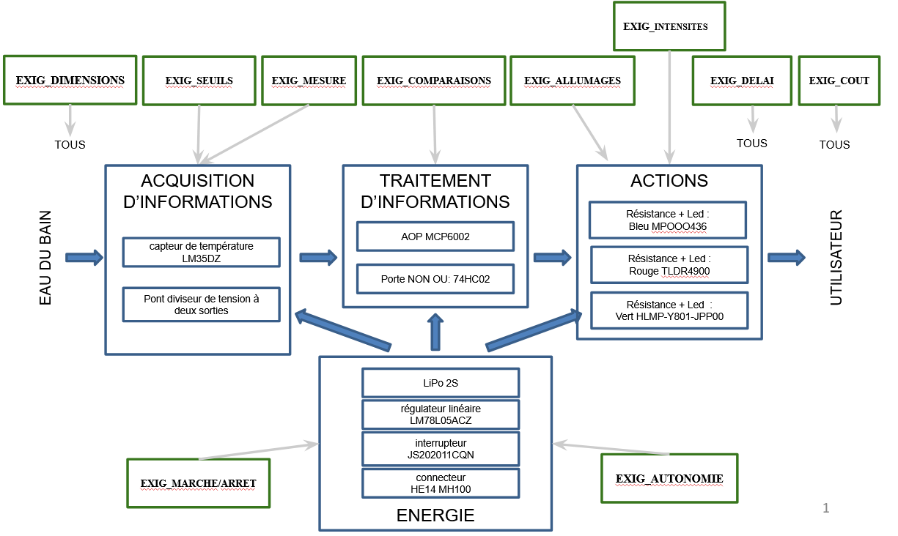
Fig. 1 (DDC) — Synoptique architecture fonctionnelle : 4 blocs Énergie · Acquisition · Traitement · Action
Phase 1
Ce que j'ai fait — Conception
Spécifications et solutions techniques globales : Le projet impose la réalisation d'un système embarqué autonome de mesure thermique temps réel, fonctionnant sans microcontrôleur. L'acquisition repose sur un capteur analogique LM35DZ délivrant une tension linéaire de 10 mV/°C. La définition des seuils critiques (36 °C et 39 °C) est matérialisée par un pont diviseur de tension à résistances en série calibré pour générer des tensions de référence fixes de 360 mV et 390 mV. Le traitement de ces signaux est confié à un double amplificateur opérationnel MCP6002 monté en comparateur, dont les sorties logiques attaquent un circuit de portes NON-OU 74HC02 pour assurer le décodage. L'affichage exclusif est réalisé par trois LED (bleue, verte, rouge) alimentées via un régulateur de tension LM78L05 qui stabilise le bus d'énergie à 5 V. Mon travail s'est concentré sur la conception et la justification technique des blocs Traitement et Action .
- Solutions proposées pour le Traitement : J'ai opté pour un double amplificateur opérationnel MCP6002 configuré en comparateur analogique de tension. Ce choix se justifie par sa technologie Rail-to-Rail en entrée et en sortie, indispensable sous une faible alimentation de 5 V pour éviter les tensions de déchet et garantir une comparaison fiable des seuils face au signal du LM35DZ. Pour décoder ces signaux sans microcontrôleur, j'ai proposé l'intégration d'un circuit logique de portes NON-OU (74HC02). Ce circuit CMOS offre une excellente immunité aux bruits et permet, par combinaison logique issue de ma table de vérité, d'isoler mathématiquement les trois plages de température.
- Solutions proposées pour l'Action : J'ai conçu un étage à trois LED (Bleue, Verte, Rouge) configurées en logique exclusive pour assurer l'affichage visuel de l'état de l'eau (trop froide, idéale, trop chaude). Pour garantir qu'une seule LED ne s'allume à la fois, j'ai interfacé les sorties des portes logiques avec des transistors bipolaires montés en commutation, agissant comme des interrupteurs commandés. Chaque branche intègre une résistance de limitation de courant calculée pour fixer l'intensité à 10 mA, assurant une luminosité optimale sans surcharger les sorties du circuit intégré.
C'est à travers ces choix techniques que j'ai développé les compétences suivantes.
J'identifie les fonctions demandées à la lecture du cahier des charges
J'ai décomposé le besoin en fonctions techniques réparties dans une architecture à quatre blocs : Énergie, Acquisition, Traitement et Action. Cette décomposition m'a permis d'identifier que le système devait rester entièrement analogique — sans microcontrôleur — et que chaque bloc devait répondre à des fonctions précises et indépendantes. Le LM35DZ a été affecté au bloc Acquisition (10 mV/°C, 0–500 mV), le pont diviseur et les comparateurs au bloc Traitement, les trois LED au bloc Action, et le régulateur LM78L05 avec la batterie LiPo 2S au bloc Énergie.
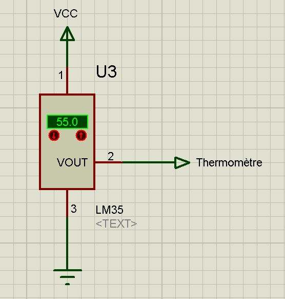
Fig. 2 (DDC) — Schéma électrique du capteur LM35DZ (CPR_MESURE) : sortie 10 mV/°C, plage 0–500 mV pour 0–50 °C
Je propose une solution technique pour répondre à une fonction
Pour le bloc Traitement, j'ai argumenté le choix du MCP6002 en mode comparateur : compatible avec l'alimentation régulée à 5 V, encombrement réduit par rapport au comparateur dédié. J'ai construit la table de vérité de la porte NOR 74HC02 pour démontrer qu'une sortie haute n'est obtenue que lorsque les deux AOP sont simultanément à 0 — condition exclusive à la plage 36–39 °C. Pour le bloc Action, j'ai calculé les résistances de limitation R4, R5, R6 à partir des courbes datasheet de chaque LED pour obtenir 910 Ω, 4 700 Ω et 680 Ω après normalisation série E24.
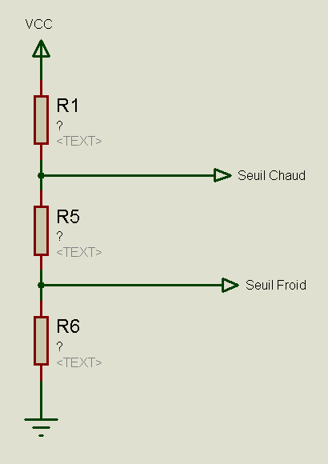
Fig. 3 (DDC) — Pont diviseur : V_seuil_chaud = 390 mV, V_seuil_froid = 360 mV
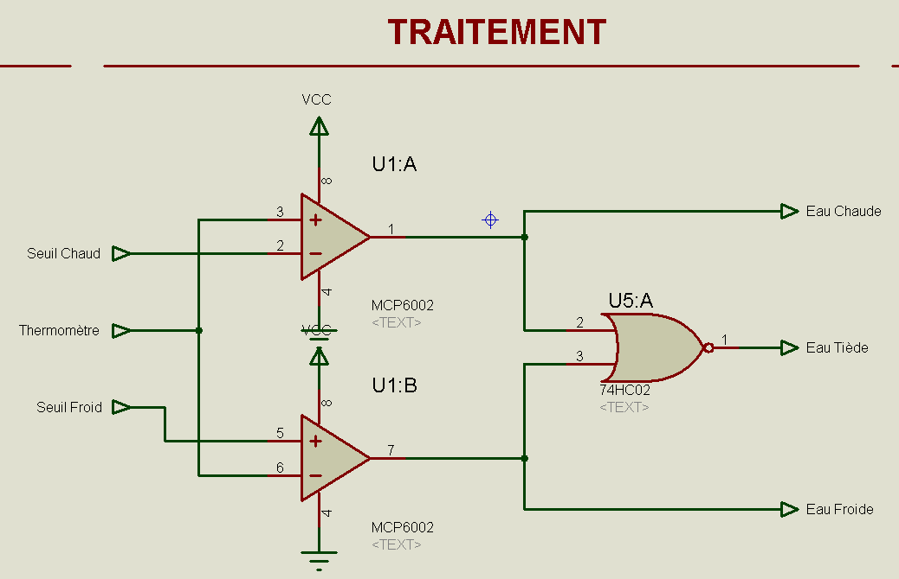
Fig. 4 (DDC) — Table de vérité NOR 74HC02 : sortie = 1 si T1 = T2 = 0
J'affine une solution technique en m'appuyant sur un maquettage numérique et/ou matériel
J'ai simulé l'étage Traitement sur ISIS avec trois générateurs de tension (0,36 V, 0,39 V et tension variable simulant le capteur) et trois voltmètres en sortie, validant les trois états de commutation avant tout perçage. Les simulations ont confirmé les valeurs de R4, R5, R6 et la logique d'allumage exclusive des LED. En parallèle, j'ai affiné le routage ARES : placement aligné et équidistant des trois LED en façade, condensateurs de découplage positionnés au plus près du LM78L05.
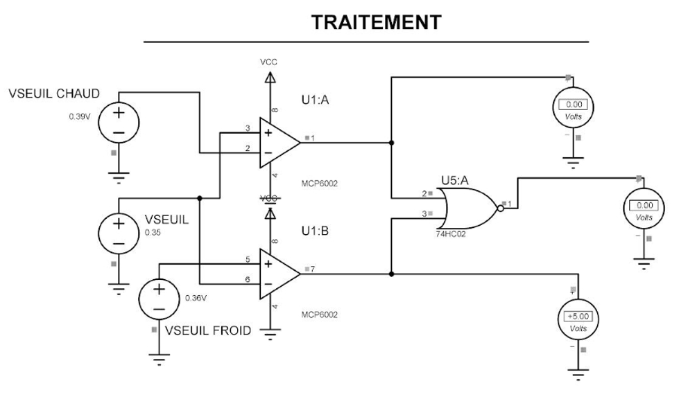
DDC — Simulation ISIS : vérification numérique des trois états de commutation LED
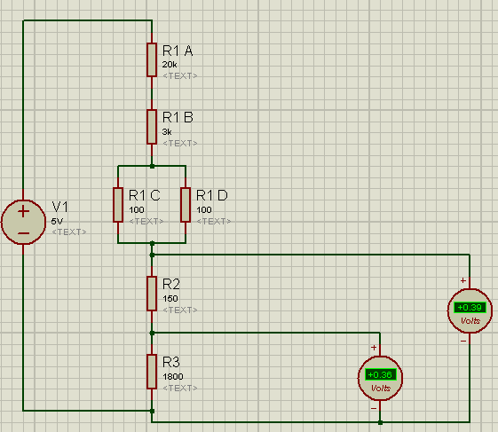
Fig. 9 (DDC) — Vérification dimensions et implantation ARES : 100 × 60 mm
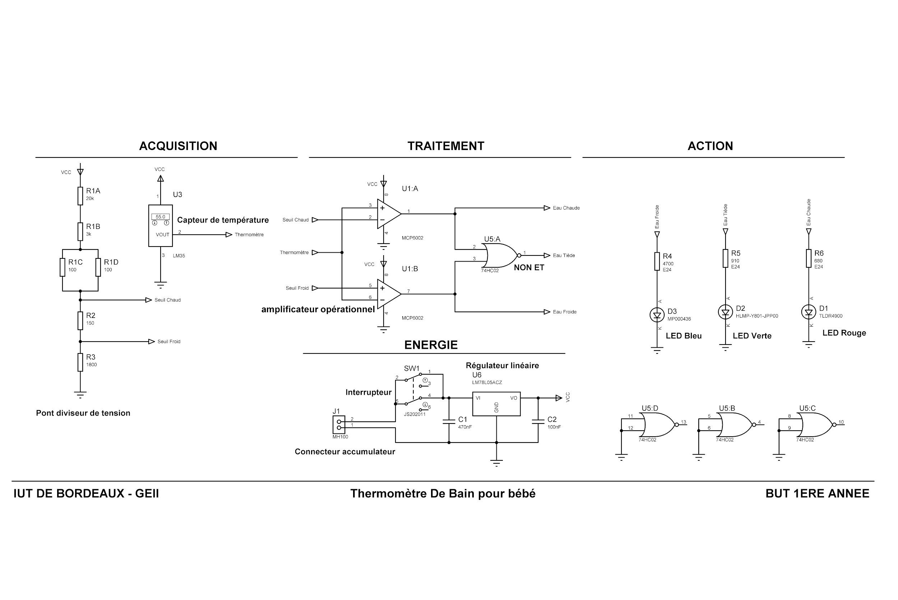
Fig. 24 (DDC) — Schéma électrique détaillé final : quatre étages
Je rédige un dossier de conception et de fabrication
J'ai rédigé les paragraphes CPR_COMPARAISONS, CPR_ALLUMAGES, CPR_INTENSITES et leurs équivalents en conception détaillée, en respectant la structure documentaire imposée : rédacteur/relecteur, figures numérotées exportées à 600 DPI, référencement explicite des exigences. J'ai également contribué au DDF en fournissant le typon et le plan de perçage.
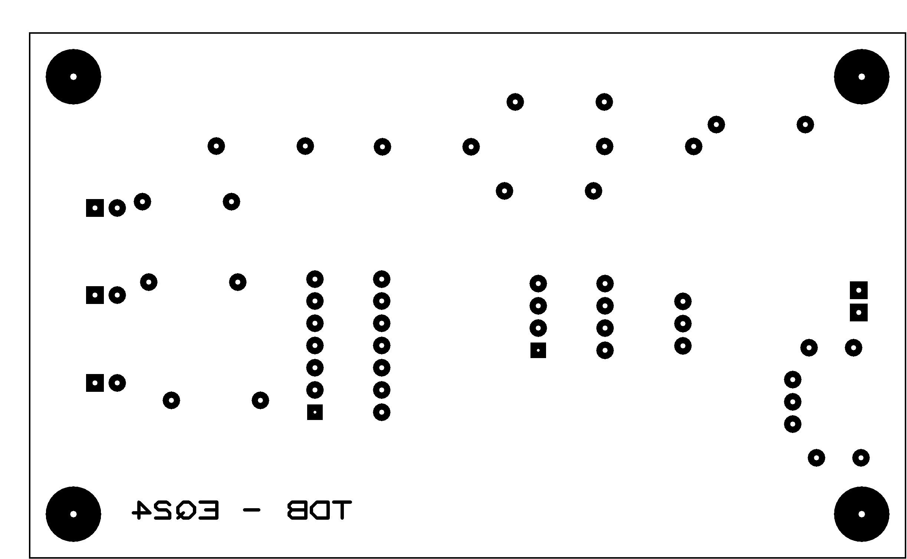
DDF — Typon face supérieure de la carte EQ24
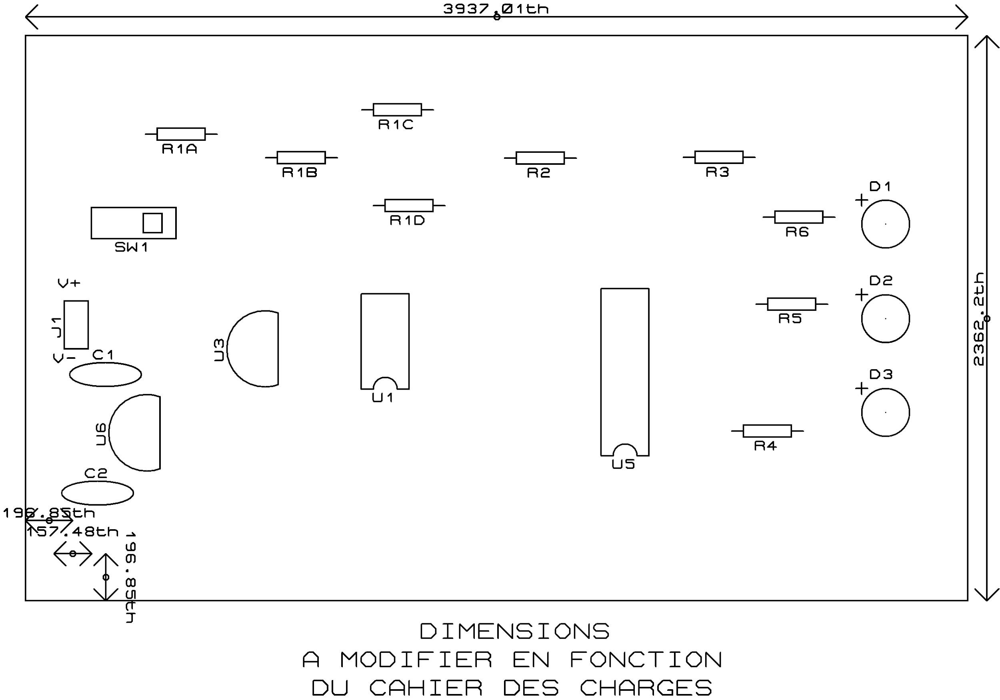
DDF — Plan de perçage : 4 trous Ø 4 mm à 5 mm des bords
Phase 2
Ce que j'ai fait — Vérification
La phase de vérification a consisté à dérouler les protocoles de tests du DDV afin de valider la conformité électrique du prototype EQ24. Le travail de groupe a notamment inclus la mise en place des bancs de mesure pour évaluer la puissance totale dissipée par la carte, tester la bonne intensité lumineuse de chaque LED, relever les seuils de basculement des comparateurs et caractériser les signaux d'interface en fonction de la température.
- Vérification du bloc Énergie : J'ai qualifié expérimentalement la gestion de l'alimentation. En insérant un ampèremètre en série sous une tension nominale de 7,4 V, j'ai mesuré le courant consommé dans chaque mode opérationnel. Le courant maximal relevé valide par le calcul une autonomie théorique de 42,73 heures, dépassant l'exigence minimale de 24 heures (EXIG_AUTONOMIE). J'ai également testé l'interrupteur JS202011, confirmant l'absence totale de courant résiduel en position OFF.
- Vérification du bloc Acquisition : J'ai mené les essais de caractérisation de la chaîne de capture thermique. En mesurant au voltmètre de précision la tension issue du pont diviseur, j'ai relevé un seuil bas de 0,362 V (écart de 0,6 % par rapport à la théorie) et un seuil haut de 0,392 V (écart de 0,5 %). Ces mesures valident la précision du décodage des seuils à l'intérieur de la tolérance de ±5 % requise par le cahier des charges.
La conduite de ces essais m'a amené à travailler les compétences suivantes.
J'applique, j'élabore, je rédige une procédure d'essais
J'ai rédigé et appliqué les protocoles ESS_AUTONOMIE et ESS_MARCHE_ARRET : but de l'essai, moyens (références appareils, câblage), procédure numérotée, résultats attendus avec tolérance et statut de conformité. Pour ESS_AUTONOMIE, la procédure inclut la chauffe progressive du capteur pour commuter les trois états LED et relever le courant maximal — 8,19 mA — permettant de calculer une autonomie de 42,73 h, supérieure aux 24 h imposées. J'ai également conduit ESS_SEUILS : mesure au voltmètre des tensions du pont diviseur, avec 0,362 V et 0,392 V relevés, soit des écarts de 0,6 % et 0,5 % par rapport aux valeurs théoriques.
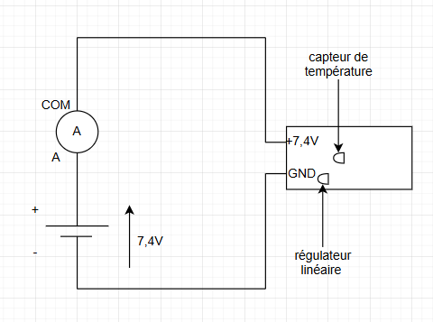
Fig. 5 (DDV) — Plan de câblage ESS_AUTONOMIE : générateur 7,4 V → ampèremètre en série → carte EQ24
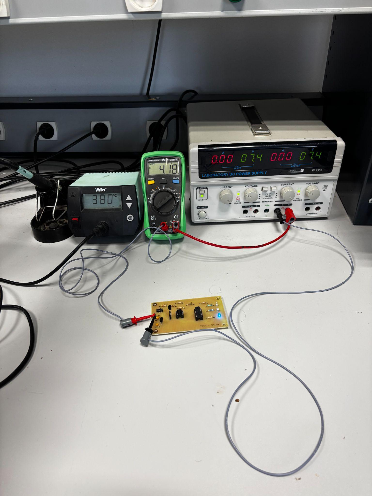
Fig. 6 (DDV) — Mesure du courant consommé (un des trois états LED)
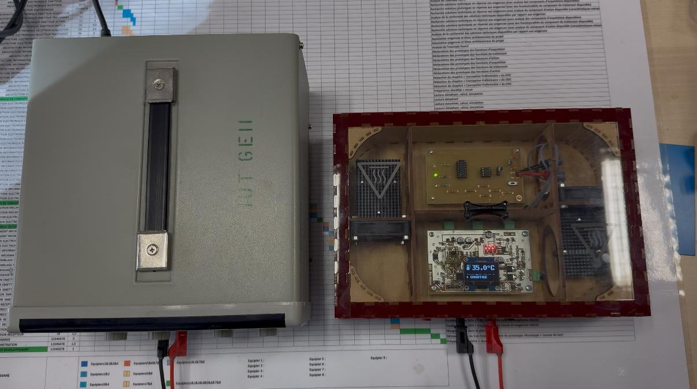
Fig. 13 (DDV) — Carte EQ24 dans l'étuve thermostatée lors de ESS_COMPARAISONS : voyant vert allumé à 37,5 °C
J'identifie, je corrige les non-conformités d'un prototype
Lors de ESS_DIMENSIONS, j'ai mesuré le diamètre des trous de fixation au pied à coulisse (becs intérieurs) : 3,21 mm — en deçà du minimum autorisé de 3,80 mm (4 mm − 0,2 mm). J'ai documenté la cause racine : le foret disponible en atelier ne permettait pas d'atteindre le diamètre requis, contrainte matérielle et non erreur de conception. J'ai évalué que la non-conformité était purement dimensionnelle sans impact fonctionnel, et proposé la solution corrective : approvisionnement d'un foret Ø 4 mm avant tout lancement série.
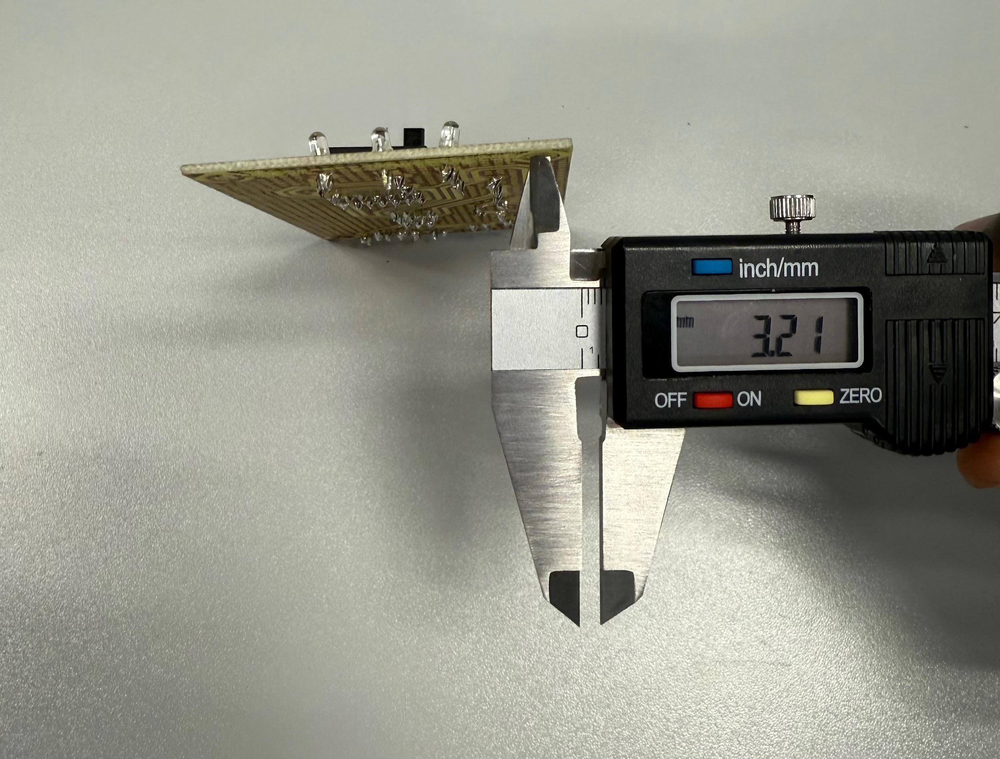
Fig. 3 (DDV) — Diamètre des trous : 3,21 mm au lieu de 4,00 mm (non conforme)
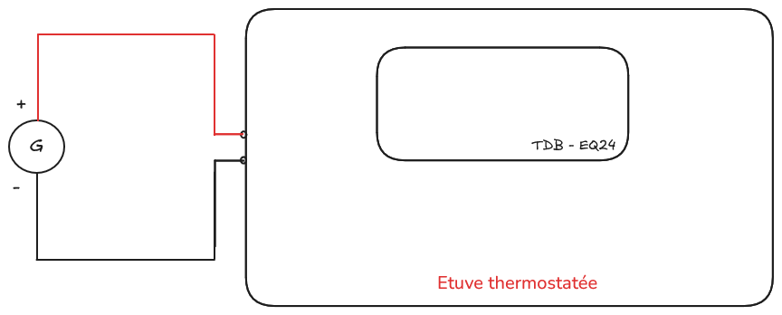
DDV — Tableau récapitulatif des résultats de vérification
Matrice de conformité
Livrables